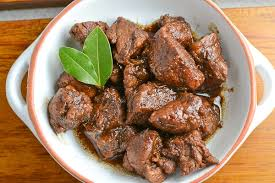

My Recipes: Pork Adobo
Photo Gallery

Ingredients
- 0.5 kg Pork Liempo (pork belly)
- 1/4 cup soy sauce
- 1/4 cup vinegar
- 4 cloves garlic, crushed
- 1 tsp whole peppercorns
- 2 bay leaves
- 1 cup water
- Salt to taste
Instructions
- In a pot, combine pork, soy sauce, vinegar, garlic, peppercorns, and bay leaves.
- Let it marinate for at least 30 minutes (or overnight for best flavor).
-
Bring to a boil, then add water. Simmer on low heat for about 45 minutes to 1 hour, or
until pork is tender.
-
Adjust seasoning with salt if needed. Reduce the sauce to your preferred consistency.
- Serve hot with rice and enjoy the bold flavors!